정보처리산업기사 (2020-06-06 기출문제)
1과목: 데이터 베이스
1. 데이터베이스 관리 시스템(DBMS)의 필수기능에 해당하지 않는 것은?
- 정의 기능(definition facility)
- 조작 기능(manipulation facility)
- 제어 기능(control facility)
- 사전 기능(dictionary facility)
(정답률: 86%)

2. 다음 설명에 해당하는 것은?
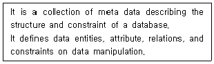
- Bubble Sort
- Schema
- Key
- Data Warehouse
(정답률: 84%)
3. 로킹에 대한 설명으로 옳지 않은 것은?
- 로킹의 대상이 되는 객체의 크기를 로킹 단위라고 한다.
- 로킹은 주요 데이터의 접근을 상호배타적으로 하는 것이다.
- 로킹 단위가 크면 병행성 수준이 높아진다.
- 로킹 단위가 작아지면 로킹 오버헤드가 증가한다.
(정답률: 60%)
4. 릴레이션의 특징으로 옳지 않은 것은?
- 한 릴레이션에 포함된 튜플들은 모두 상이하다.
- 모든 속성 값은 세분화가 가능해야 하므로 원자값이어서는 안 된다.
- 한 릴레이션에 포함된 튜플 사이에는 순서가 없다.
- 한 릴레이션을 구성하는 속성 사이에는 순서가 없다.
(정답률: 74%)
5. A, B, C, D의 순서로 정해진 입력 자료를 스택에 입력하였다가 출력한 결과가 될 수 없는 것은? (단, 왼쪽부터 먼저 출력된 순서이다.)
- C, B, A, D
- C, D, A, B
- B, A, D, C
- B, C, D, A
(정답률: 67%)
6. 다음의 조건을 모두 만족하는 정규형은?
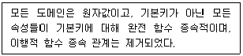
- 제1 정규형
- 제2 정규형
- 제3 정규형
- 비정규 릴레이션
(정답률: 65%)
7. 데이터베이스 설계 단계 중 논리적 설계 단계에서의 수행사항이 아닌 것은?
- 논리적 데이터 모델로 변환
- 트랜잭션 인터페이스 설계
- 저장 레코드 양식 설계
- 개념스키마의 평가 및 정제
(정답률: 60%)
8. 데이터베이스의 설계 단계 순서로 옳은 것은?
- 개념적설계 → 물리적설계 → 논리적설계
- 개념적설계 → 논리적설계 → 물리적설계
- 물리적설계 → 개념적설계 → 논리적설계
- 논리적설계 → 개념적설계 → 물리적설계
(정답률: 81%)
9. SQL 언어의 데이터 제어어(DCL)에 해당하는 것은?
- SELECT
- INSERT
- UPDATE
- GRANT
(정답률: 74%)
10. 논리적 데이터 모델 중 오너-멤버(Owner-Member) 관계를 가지며, CODASYL DBTG 모델이라고도 하는 것은?
- E-R 모델
- 관계 데이터 모델
- 계층 데이터 모델
- 네트워크 데이터 모델
(정답률: 56%)
11. 다음 그림에서 트리의 차수는?
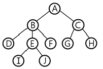
- 3
- 4
- 5
- 10
(정답률: 70%)
12. 다음 그림에서 단말 노드(Terminal Node)의 개수는?
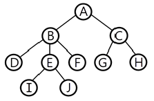
- 3
- 4
- 6
- 10
(정답률: 74%)
13. 다음 자료를 버블 정렬을 이용하여 오름차순으로 정렬하고자 할 경우 1회전을 수행한 결과는?
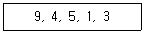
- 4, 5, 1, 3, 9
- 1, 3, 4, 5, 9
- 4, 1, 3, 5, 9
- 1, 3, 9, 4, 5
(정답률: 81%)
14. 데이터베이스 설계 단계 중 물리적 설계 단계와 거리가 먼 것은?
- 저장 레코드 양식 설계
- 레코드 집중의 분석 및 설계
- 트랜잭션 모델링 수행
- 접근 경로 설계
(정답률: 61%)
15. 해싱(Hashing)에서 한 개의 레코드를 저장할 수 있는 공간을 의미하는 것은?
- Bucket
- Synonym
- Slot
- Collision
(정답률: 67%)
16. 다음 SQL 문에서 테이블 생성에 사용되는 문장은?
- DROP
- INSERT
- SELECT
- CREATE
(정답률: 85%)
17. E-R 모델에 관한 설명으로 옳지 않은 것은?
- 개체타입은 타원, 관계 타입은 사각형, 속성은 선으로 표현한다.
- 개체 타입과 이들 간의 관계 타입을 이용한다.
- E-R 모델에서는 데이터를 개체, 관계, 속성으로 묘사한다.
- 현실세계가 내포하는 의미들이 포함 된다.
(정답률: 80%)
18. 뷰(view)에 대한 설명으로 옳지 않은 것은?
- 실제 저장된 데이터 중에서 사용자가 필요한 내용만을 선별해서 볼 수 있다.
- 데이터 접근 제어로 보안을 제공한다.
- 뷰를 제거할 때는 DELETE문을 사용한다.
- 실제로는 존재하지 않는 가상의 테이블이다.
(정답률: 76%)
19. 비선형구조에 해당하는 것은?
- 그래프
- 데크
- 스택
- 큐
(정답률: 78%)
20. 다음의 중위(infix) 표기 방식을 전위(prefix) 표기 방식으로 옳게 변환 한 것은?
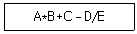
- AB*C+DE/－
- ABCDE*+－/
- －+*ABC/DE
- *+－/ABCDE
(정답률: 77%)
2과목: 전자 계산기 구조
21. 컴퓨터 명령어 실행주기 중에서 인스트럭션의 종류에 대한 판단이 이루 어지는 상태는?
- fetch
- execute
- interrupt
- indirect
(정답률: 56%)
22. 버스(bus)를 구성하는데 사용할 수 있는 논리회로는?
- encoder
- multiplexer
- counter
- comparator
(정답률: 66%)
23. 마이크로 오퍼레이션에 관한 설명 중 옳은 것은?
- 마이크로 오퍼레이션을 동기시키는 방법으로 동기 고정식과 동기 가변식이 있다.
- 동기 고정식은 CPU 시간의 효율적 이용은 가능하나 제어가 복잡하다.
- 동기 가변식은 CPU 시간의 낭비를 초래하지만 제어회로가 간단하다.
- 마이크로 사이클은 마이크로 오퍼레이션과 무관하다.
(정답률: 65%)
24. 명령어의 형식 가운데 연산에 사용된 모든 피연산자 값을 상실하는 명령어 형식은?
- 3-주소 형식 명령어
- 2-주소 형식 명령어
- 1-주소 형식 명령어
- 0-주소 형식 명령어
(정답률: 61%)
25. 다음 논리도(Logic Diagram)에서 Y0에 1, Y1에 0이 입력되었을 때, 1을 출력하는 단자는?
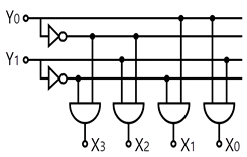
- X1
- X1과 X2
- X2
- X2와 X3
(정답률: 63%)
26. 1개의 Full Adder를 구성하기 위해서는 최소 몇 개의 Half Adder가 있어야 하는가?
- 1
- 2
- 3
- 4
(정답률: 78%)
27. 보조기억장치의 일반적인 특징 중 틀린 것은?
- 읽고 쓰는 속도가 느리다.
- 기억용량을 크게하기가 용이하다.
- 전원공급이 중단되면 기억된 내용이 모두 지워진다.
- 기억용량의 상대적인 가격이 주기억장치보다 저렴하다.
(정답률: 70%)
28. 8진수인 다음식의 연산값은?
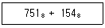
- 2151
- 2152
- 1251
- 1125
(정답률: 61%)
29. 채널의 기능이 아닌 것은?
- 입출력 명령 해독
- 입출력 명령 지시
- 입출력 데이터 저장
- 입출력 데이터 실행
(정답률: 48%)
30. ALU의 위치와 기능이 바르게 나열된 것은?
- CPU, 산술논리연산
- ROM, 산술논리연산
- CPU, 주소지정
- ROM, 주소지정
(정답률: 67%)
31. 중앙처리장치와 주기억장치의 속도 차이가 현저할 때 인스트럭션의 수행속도가 주기억장치에 제한을 받지 않고 중앙처리장치의 속도로 수행되도록 하는 기억장치는?
- 캐시메모리
- 인스트럭션 버퍼
- CAM
- 제어기억장치
(정답률: 68%)
32. 전자계산기에서 어떤 특수한 상태가 발생할 때 그것이 원인이 되어 현재 실행하고 있는 프로그램은 일시 중단 되고, 그 특수한 상태를 처리하는 프로그램으로 옮겨져 처리한 후 다시 원래의 프로그램을 처리하는 것은?
- 인터럽트
- 다중처리
- 시분할 시스템
- 다중 프로그램
(정답률: 72%)
33. 하드웨어의 특성상 주기억장치가 제공할 수 있는 정보전달의 능력 한계 를 무엇이라 하는가?
- 주기억장치 용량폭
- 주기억장치 대역폭
- 주기억장치 접근폭
- 주기억장치 전달폭
(정답률: 65%)
34. 분기 명령이 수행될 때 다음의 레지스터 중 그 내용이 바뀌는 것은?
- 누산기
- 프로그램 카운터
- 인덱스 레지스터
- 메모리 어드레스 레지스터
(정답률: 54%)
35. 비수치 연산에 속하지 않은 것은?
- 사칙 연산
- 논리적 연산
- 로테이트(rotate)
- 논리적 시프트(shift)
(정답률: 65%)
36. op-code가 8비트일 때 생성될 수 있는 명령어의 수는?
- 27－1
- 27
- 28
- 28－1
(정답률: 60%)
37. 기억장치 계층 구조 상 접근 속도가 가장 빠른 것은?
- ROM
- RAM
- Register
- Magnetic Disk
(정답률: 72%)
38. 중앙 처리 장치를 통하지 않고 직접 주기억장치를 접근하여 입출력을 하는 방식으로, 한 번에 한 블록씩 전송하는 방법은?
- DMA
- 인터럽트 입출력
- 고정 채널 제어기 입출력
- 가변 채널 제어기 입출력
(정답률: 62%)
39. 트랩(trap)의 발생 원인으로 옳은 것은?
- 0으로 나눌 때
- 정해진 시간이 지났을 때
- 정보 전송이 끝났음을 알릴 때
- 입·출력장치가 데이터의 전송을 요구할 때
(정답률: 60%)
40. 다음 게이트의 출력은? (단, A = B = S = 1)
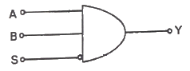
- ０
- １
- AB
- S
(정답률: 57%)
3과목: 시스템분석설계
41. 다음 표와 같이 시스템이 운영될 때 시스템의 평균수리시간(MTTR)은? (단, 상태에서 R=가동중, S=고장중이다.)
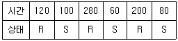
- 80시간
- 200시간
- 120시간
- 140시간
(정답률: 63%)
42. 색인순차파일(Index Sequential File)에서 데이터 레코드 중의 key 항목만을 모아서 기록하는 인덱스 부분에 해당하지 않는 것은?
- Master Index
- Cylinder Index
- Track Index
- Data Index
(정답률: 58%)
43. 다음의 소프트웨어 개발주기 모형에 대한 설명에 해당하는 것은?
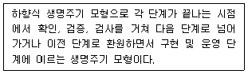
- 단계적 모형
- 폭포수 모형
- 구조적 모형
- 객체지향적 모형
(정답률: 67%)
44. 코드 설계 단계 중 다음 설명에 해당하는 것은?
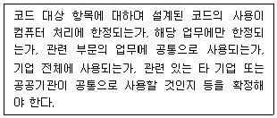
- 사용 범위의 결정
- 코드 목적의 명확화
- 코드 대상의 특성 분석
- 코드 부여 방식 결정
(정답률: 64%)
45. 순서도와는 달리 논리 기술에 중점을 두고 상자 도형을 이용한 설계 도구로 순차, 선택, 반복 등의 제어 논리 구조를 표현하는 도구는?
- Waterfall 모델
- N-S차트
- PAD
- HCP
(정답률: 58%)
46. 객체지향기법에서 객체가 메시지를 받아 실행해야 할 때 객체의 구체적 인 연산을 정의한 것은?
- Instance
- Message
- Class
- Method
(정답률: 71%)
47. 객체지향시스템 분석에서 사건들을 시나리오로 작성하여 각 시나리오마다 사건 추적도를 그리고 사건 흐름 다이어그램을 작성하는 단계는?
- 객체 모형화
- 동적 모형화
- 기능 모형화
- 사양서 작성
(정답률: 60%)
48. 시스템의 특성 중 제어성과 가장 관련 깊은 것은?
- 최종 목표에 도달하고자 하는 특성
- 시스템 변화에 스스로 대처할 수 있는 특성
- 정해진 목표를 달성하기 위해 오류가 발생하지 않도록 사태를 감시하는 특성
- 관련된 다른 시스템과 상호 의존관계로 통합되는 특성
(정답률: 71%)
49. 모듈의 결합도는 설계에 대한 품질 평가 방법의 하나로서 두 모듈 간의 상호 의존도를 측정하는 것이다. 다음 중 설계 품질이 가장 좋은 결합도는?
- Common Coupling
- Data Coupling
- Control Coupling
- Content Coupling
(정답률: 45%)
50. 중량, 용량, 거리, 크기, 면적 등의 물리적 수치를 직접 코드에 적용시키는 코드 방식은?
- 순차코드(sequence code)
- 표의숫자코드(Significant digit code)
- 블록코드(block code)
- 기호코드(mnemonic code)
(정답률: 64%)
51. 시스템 개발 시 문서화의 효과에 대한 설명으로 거리가 먼 것은?
- 시스템 개발 단계에서의 요식적 행위이다.
- 효율적인 소프트웨어 개발관리가 용이하다.
- 시스템 개발 중 추가 변경에 따른 혼란을 방지한다.
- 시스템 개발 후에 유지보수가 용이하다.
(정답률: 73%)
52. 모듈 내부의 모든 기능 요소들이 단일한 목적을 위해 수행하는 경우의 응집도는?
- Coincidental cohesion
- Functional cohesion
- Procedural cohesion
- Temporal cohesion
(정답률: 59%)
53. 다음은 어떤 종류의 코드 오류(error)인가?
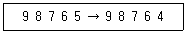
- Transposition error
- Random error
- Transcription error
- Double Transposition error
(정답률: 70%)
54. 프로세스의 표준 처리 패턴 중 어떤 파일에서 특정한 조건에 만족하는 정보를 추출해 내는 처리는?
- Matching
- Merge
- Extract
- Distribution
(정답률: 54%)
55. 마스터 파일의 데이터를 트랜잭션 파일에 의해 추가, 삭제, 수정 등의 작업을 하여 새로운 마스터 파일을 작성하는 처리 패턴은?
- merge
- update
- matching
- conversion
(정답률: 72%)
56. 자료 흐름도의 구성 요소 중 대상 시스템의 외부에 존재하는 사람이나 조직체를 나타낸 것은?
- Process
- Data Flow
- Data Store
- Terminator
(정답률: 64%)
57. 입력된 자료가 처리되어 일단 출력된 후 이용자를 거쳐 다시 재입력되는 방식으로 공과금, 보험료 징수 등의 지로용지를 처리하는데 사용되는 입력방식은?
- 집중 매체화형 시스템
- 턴어라운드 시스템
- 분산 매체화형 시스템
- 직접 입력 시스템
(정답률: 71%)
58. 자료 사전(Data Dictionary)에서 반복을 의미하는 기호는?
- +
- { }
- [ ]
- ( )
(정답률: 63%)
59. 데이터 파일의 종류 중 마스터 파일을 갱신 또는 조회하기 위해 작성하는 파일은?
- trailer file
- transaction file
- summary file
- source data file
(정답률: 62%)
60. 오류 검사의 종류 중 산술 연산 시 “0(zero)"으로 나눈 경우의 여부를 검사하는 것은?
- impossible check
- sign check
- overflow check
- unmatched record check
(정답률: 55%)
4과목: 운영체제
61. 파일 디스크립터(descriptor)가 가지고 있는 정보로 틀린 것은?
- 파일의 구조
- 접근 제어 정보
- 파일의 백업 방법
- 보조기억장치상의 파일 위치
(정답률: 60%)
62. 3개의 페이지 프레임을 갖는 시스템에서 페이지 참조 순서가 1, 2, 1, 0, 4, 1, 3일 경우 FIFO 알고리즘에 의한 최종 페이지 대치 결과는?
- 1, 4, 2
- 1, 2, 0
- 4, 1, 3
- 4, 1, 0
(정답률: 64%)
63. 교착상태 발생의 필요조건에 해당하는 것으로 나열된 것은?
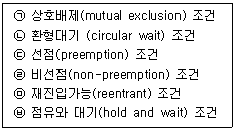
- ㉠, ㉡, ㉣, ㉥
- ㉠, ㉣, ㉤, ㉥
- ㉡, ㉢, ㉤, ㉥
- ㉠, ㉢, ㉣, ㉥
(정답률: 61%)
64. 가상기억장치에서 어떤 프로세스가 충분한 프레임을 갖지 못하여 페이지 교환이 계속적으로 발생하여 전체 시스템의 성능이 저하되는 현상을 의미하는 것은?
- 페이징
- 스래싱
- 스와핑
- 폴링
(정답률: 55%)
65. 네트워크를 이용하여 서비스를 요구/제공할 수 있다. 여러 가지 서비스 를 요구하는 측을 일컫는 용어는?
- Host
- Client
- Server
- Backbone
(정답률: 71%)
66. 파일의 보호 방법 중 틀린 것은?
- 암호화
- 접근제어
- 패스워드
- 파일공유
(정답률: 80%)
67. 교착상태 해결 방법 중 다음 사항과 관계되는 것은?
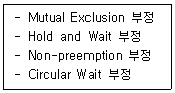
- Recovery
- Detection
- Avoidance
- Prevention
(정답률: 49%)
68. 파일 시스템에 대한 설명으로 틀린 것은?
- 사용자가 파일을 생성하고 수정하며 제거할 수 있도록 한다.
- 사용자는 자료가 저장되어 있는 특정장치의 물리적인 제어 방식 을 알고 있어야 한다.
- 파일을 안전하게 사용할 수 있도록 하고, 파일이 보호되어야 한다.
- 손쉽게 사용할 수 있도록 편리한 사용자 인터페이스를 제공해야 한다.
(정답률: 69%)
69. RR(Round Robin) 방식에 관한 설명으로 틀린 것은?
- 시분할 시스템을 위해 고안된 방식이다.
- 시스템이 사용자에게 적합한 응답시간을 제공해 주는 대화식 시스템에 유용하다.
- 시간 할당량이 클 경우 FCFS 기법과 같아지고, 시간 할당량이 작을 경우 문맥 교환 및 오버헤드가 자주 발생될 수 있다.
- 프로세스에게 이미 할당된 프로세서를 강제로 빼앗을 수 없고, 그 프로세스의 사용이 종료된 후에 스케줄링 해야하는 방법을 택하고 있다.
(정답률: 56%)
70. 프로세스 스케줄링 기법 중 비선점 방식의 SJF에 선점 방식을 도입하여, 현재 실행중인 프로세스보다 잔여 처리 시간이 짧은 프로세스가 준비 큐에 생기면 실행중인 프로세스를 선점하여 더 짧은 프로세스를 실행시키는 방식은?
- 기한부 스케줄링
- SRT 스케줄링
- HRN 스케줄링
- 다단계 큐 스케줄링
(정답률: 63%)
71. 한 프로세스가 다른 프로세스보다 우선순위 등이 낮아 기다리게 되는 경우, 한번 양보하거나 일정 시간이 지나면 우선순위를 한 단계씩 높여 줌으로써 오래 기다린 프로세스를 고려하여 무기한 지연을 해결하는 방법은?
- aging
- priority
- recovery
- avoidance
(정답률: 63%)
72. 기억 장치의 분할 방식 중 틀린 것은?
- 분산분할
- 고정분할
- 단일분할
- 동적분할
(정답률: 38%)
73. 공간 구역성(Spatial Locality)이 이루어지는 기억장소로 틀린 것은?
- 배열 순회(Array Traversal)
- 순차적 코드(Sequential Code) 실행
- 같은 영역에 있는 변수를 참조할 때 사용
- 카운팅(Counting), 집계(Totaling)에 사용되는 변수
(정답률: 50%)
74. 프로세스에 할당된 페이지 프레임 수가 증가하면 페이지 부재의 수가 감소하는 것이 당연하지만 페이지 프레임 수가 증가할 때 현실적으로 페이지 부재가 더 증가하는 모순(Anomaly) 현상과 가장 관계있는 페이지 교체기법은?
- LRU
- LFU
- FIFO
- Optimal
(정답률: 49%)
75. 시스템 호출의 종류 중 프로세스 제어를 위해 사용되는 명령어로 틀린 것은?
- END
- SEND
- LOAD
- EXECUTE
(정답률: 47%)
76. 다중 처리기 운영체제의 주/종(Master/Slave) 구조에서 각각의 기능에 대한 연결이 옳은 것은?
- Master : 사용자 프로그램 담당, Slave : 연산 및 입출력 담당
- Master : 연산 담당, Slave : 입출력 담당
- Master : 연산 담당, Slave : 운영체제 수행 담당
- Master : 연산 및 입출력 담당, Slave : 연산 담당
(정답률: 59%)
77. 운영체제의 기능으로 틀린 것은?
- 시스템의 오류 처리를 담당한다.
- 데이터 및 자원의 공유 기능을 제공한다.
- 사용자와 시스템 간의 인터페이스 기능을 제공한다.
- 매크로 정의인식, 정의저장, 호출인식 등을 처리한다.
(정답률: 58%)
78. 분산 처리 시스템 중 성형(star) 연결에 대한 설명으로 틀린 것은?
- 통신비용이 적게 듦
- 기본비용은 사이트 수에 비례함
- 각 사이트들이 중앙 컴퓨터에 연결되어 데이터 교환
- 중앙 사이트의 고장 시에도 전체 사이트의 성능은 영향을 받지 않음
(정답률: 70%)
79. 다음의 작업 중 운영체제가 CPU 스케줄링 기법으로 HRN 방식을 구현 했을 때 가장 먼저 처리되는 작업은?
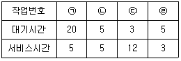
- ㉠
- ㉡
- ㉢
- ㉣
(정답률: 58%)
80. 스케줄링 기법 중 선점 알고리즘에 해당하는 것은?
- SRT(Shortest Remaining Time)
- HRN(Highest Response-ratio Next)
- SJF(Shortest Job First)
- FCFS(First Come First Service)
(정답률: 45%)
5과목: 정보통신개론
81. 광섬유 케이블의 설명으로 틀린 것은?
- 동축 케이블보다 더 넓은 대역폭을 지원한다.
- 전송속도가 UTP 케이블보다 빠르다.
- 동축 케이블에 비해 전자기적 잡음에 약하다.
- 동축 케이블에 비해 전송손실이 작다.
(정답률: 69%)
82. Shannon의 표본화정리에 의하면 보내려는 신호성분 중 최고 주파수의 최소 몇 배 이상으로 표본을 행하면 원신호를 충실하게 재현시킬 수 있는가?
- 1
- 2
- 4
- 8
(정답률: 56%)
83. 다음 내용이 설명하고 있는 LAN의 매체 접근 제어방식은?
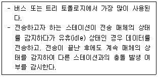
- CSMA/CD
- Token bus
- Token ring
- Slotted ring
(정답률: 54%)
84. HDLC 프레임의 구조가 순서대로 옳은 것은?
- 플래그 → 주소부 → 제어부 → 정보부 → FCS → 플래그
- 플래그 → 제어부 → FCS → 정보부 → 주소부 → 플래그
- 플래그 → 주소부 → 정보부 → FCS → 제어부 → 플래그
- 플래그 → 제어부 → FCS → 주소부 → 정보부 → 플래그
(정답률: 59%)
85. 단일 송신자와 단일 수신자간의 통신이므로, 단일 인터페이스를 사용하는 IPv6 주소 지정 방식은?
- 애니캐스트
- 유니캐스트
- 멀티캐스트
- 브로드캐스트
(정답률: 59%)
86. 800baud의 변조속도로 4상 위상 변조된 데이터의 신호속도(bps)는?
- 100
- 1200
- 1600
- 3200
(정답률: 50%)
87. FM에서 변조지수가 10, 변조신호의 최고 주파수를 4kHz라 할 때 소요 대역폭[kHz]은?
- 8
- 40
- 88
- 400
(정답률: 40%)
88. 서로 다른 기기들 간의 데이터 교환을 원활하게 수행할 수 있도록 표준 화시켜 놓은 통신 규약을 무엇이라 하는가?
- 클라이언트
- 터미널
- 링크
- 프로토콜
(정답률: 73%)
89. 다중접속 방식이 아닌 것은?
- FDMA
- TDMA
- CDMA
- XXUMA
(정답률: 62%)
90. ATM 셀의 헤더 길이는 몇 [byte] 인가?
- 2
- 5
- 8
- 10
(정답률: 55%)
91. Link State 방식의 라우팅 프로토콜은?
- RIP
- RIP V2
- IGRP
- OSPF
(정답률: 49%)
92. 발광다이오드(LED)에서 나오는 빛의 파장을 이용해 빠른 통신 속도를 구현하는 기술은?
- LAN
- MCC
- Li-Fi
- SAA
(정답률: 65%)
93. 전송 효율을 최대한 높이려고 데이터 블록의 길이를 동적으로 변경시켜 전송하는 ARQ방식은?
- Adaptive ARQ
- Stop-And-Wait ARQ
- Positive ARQ
- Distributed ARQ
(정답률: 54%)
94. 위상변화를 작게 하면서 반송파의 진폭도 바꿔 정보 전송률을 높이려는 변조방식은?
- ASK
- FSK
- PSK
- QAM
(정답률: 53%)
95. TCP 전송 계층 프로토콜을 사용하여 통신하는 데 이용되는 소켓을 무엇이라 하는가?
- 스트림 소켓
- 데이터그램 소켓
- raw 소켓
- 리시빙 소켓
(정답률: 46%)
96. 가상회선 패킷교환 방식에 대한 설명으로 옳은 것은?
- 수신은 송신된 순서대로 패킷이 도착한다.
- 우회 경로로 패킷을 전달할 수 있어 신뢰성이 높다.
- 비연결형 서비스 방식이다.
- 먼저 전송했더라도 최적의 경로를 찾지 못하면 나중에 전송한 데이터보다 늦게 도착할 수 있다.
(정답률: 37%)
97. PCM 방식의 데이터 전송 순서로 맞는 것은?
- 표본화 → 부호화 → 양자화 → 복호화
- 표본화 → 양자화 → 부호화 → 복호화
- 양자화 → 표본화 → 부호화 → 복호화
- 양자화 → 표본화 → 복호화 → 부호화
(정답률: 70%)
98. ARQ(Automatic Repeat Request) 방식에 해당하지 않는 것은?
- Stop and Wait ARQ
- Adaptive ARQ
- Receive Ready ARQ
- Go back N ARQ
(정답률: 51%)
99. OSI 7계층 모델에서 기계적, 전기적, 절차적 특성을 정의한 계층은?
- 전송 계층
- 데이터링크 계층
- 물리 계층
- 표현 계층
(정답률: 71%)
100. IP 주소 체계에서 B클래스의 주소 범위는?
- 0.0.0.0 ~ 127.255.255.255
- 128.0.0.0 ~ 191.255.255.255
- 192.0.0.0 ~ 223.255.255.255
- 224.0.0.0 ~ 239.255.255.255
(정답률: 68%)